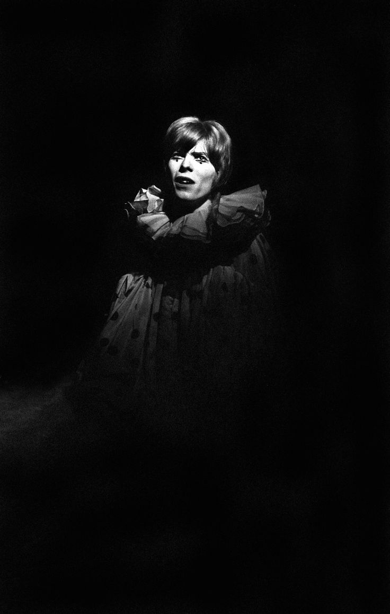

Pierrot in Turquoise / The Looking Glass Murders
1967–1968
Pierrot in Turquoise / The Looking Glass Murders
En sus inicios, antes de hacerse famoso, participó en esta obra de teatro y mimo junto a la compañía de su maestro de danza y mimo, Lindsay Kemp. Bowie actuó en el papel de Cloud e interpretó las canciones que compuso para el espectáculo.